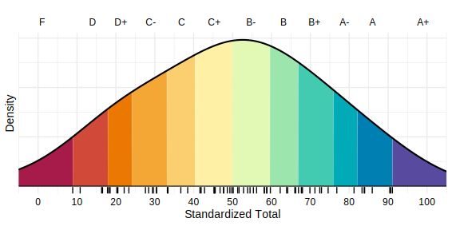

Student: QIqd
Reminder: If you tend to leave this page open in a browser tab, please refresh it periodically to ensure you're seeing the most up-to-date grades and feedback.
Notes:
- 👉 Please don't be discouraged if your grade looks lower (or higher!) than you expected at this point. There is still plenty of opportunity to improve or maintain your standing.
- 🎯 Values are shown to two or three decimal places; underlying values are stored with greater precision.
- ⚖️ The relative weighting of each homework will adjust as additional assignments are completed.
- 📝 Please report any errors on this page to the instructor.
👆 Click the menu to view results:
Homework 1
Raw Score = 100%
Median = 94.43%
MADN = 8.25%
Z = 0.674
Standardized Score: 66.86
Weight: 1.74%
Homework 2
Raw Score = 85.37%
Median = 87.8%
MADN = 14.46%
Z = -0.169
Standardized Score: 45.78
Weight: 2.38%
Homework 3
Raw Score = 91.8%
Median = 90.57%
MADN = 10.94%
Z = 0.112
Standardized Score: 52.81
Weight: 3.55%
Homework 4
Raw Score = 92.5%
Median = 82.5%
MADN = 14.83%
Z = 0.674
Standardized Score: 66.86
Weight: 2.33%
Achieve
Raw Score = 100%
Median = 97.04%
MADN = 4.38%
Z = 0.674
Standardized Score: 66.86
Weight: 6.67%
Note: this score only accounts for the first 8 Achieve assignments that were due on Nov. 6th.
Midterm
Raw Score = 46.67%
Median = 63.33%
MADN = 24.71%
Z = -0.674
Standardized Score: 33.14
Weight: 30%
Course Total
💡 When interpreting the values and distribution below, please keep in mind that about one-quarter of the class has not yet written the midterm and will be writing the deferred version. That is a fairly large proportion of students whose score in the course (presently) consists only of the homework and acheive assignments (which are extremely easy marks). The midterm carries substantial weight and deferred writers historically score lower on average. Thus, when their scores are included and the overall class distribution adjusts, students who wrote in class on Nov 6th may very likely have current standing shift upward somewhat.
Weighted Score: 43.04
Median = 44.99
MADN = 19.62
Z = -0.1
Standardized Total = 47.51
Current Letter Grade: C+
Your percentile rank shows the percentage of students whose performance is below yours.
This means you are currently outperforming about 46% of the class.
Class Distribution
Each short tick mark below the curve represents an individual student's score.
👆 Description of values (click to view)
- Raw Score: This is your raw percentage score for an assessment. This value is ONLY meaningful when viewed relative to the class; specifically, in relation to the median and MADN statistics. What ultimately matters is your performance compared to the class as a whole, which is what both the z-score and standardized score represent.
Note:- Assignments demonstrating effort (i.e., earning a minimal raw score) will not fall below a D on the standardized scale.
- Median: The class average.
- MADN: A robust measure of spread. It shows how far a student's grade is from the class median. Unlike the standard deviation, it isn't distorted by a few very high or very low scores, so it gives a fairer sense of overall performance variation. Though, in practice, you can broadly treat it like a standard deviation when interpreting your standing in the class.
- Z: This is your score as a robust standard score. It can be interpreted on the same scale as a conventional z-score, but instead of standard deviations from the mean, it is showing MADN's from the median. Z = 0 is the class average.
- Standardized Score: This is Z transformed to have a median of 50 and MADN of 25 (i.e., Z x 25 + 50). Thus, values above 50 are above average, below 50 are below average. The full interpretation of these scores can be seen in the table below.
- Weighted Score: This is the weighted average of all your Standardized Scores (e.g., Homework 1, Homework 2, ... midterm, etc.).
Note:- Even though the Weighted Score averages assessments with the same centre and spread, the unequal weights cause small shifts in the overall distribution. That's why we use the Standardized Total - to realign everything to a common scale.
- Because weighted averaging is sensitive to extreme values (i.e., not robust), all Standardized Scores are floored to prevent distortions.
- Standardized Total: This is the Weighted Score, standardized to have a median of 50 and a MADN of 25. This is the value used to determine your letter grade in the course. The letter cutoffs are below.
- Percentile Rank: This is provided as an additional metric of your performance but is not used to determine your letter grade (as that would consitute "curving," which the University prohibits).
For additional information about how and why your scores are standardized, please refer to either the syllabus or the "Grades" section of the course website.
| Standardized Score | Interpretation | Grade Points | Letter Grade |
|---|---|---|---|
| \(91.12 < \infty\) | Outstanding | 4.0 | A+ |
| \(82.04 < 91.12\) | Excellent | 4.0 | A |
| \(75.91 < 82.04\) | Very Good | 3.7 | A– |
| \(66.86 < 75.91\) | Good | 3.3 | B+ |
| \(59.63 < 66.86\) | Above Average | 3.0 | B |
| \(50.00 < 59.63\) | Average | 2.7 | B– |
| \(40.37 < 50.00\) | Satisfactory | 2.3 | C+ |
| \(33.14 < 40.37\) | Acceptable | 2.0 | C |
| \(24.09 < 33.14\) | Marginal | 1.7 | C– |
| \(17.96 < 24.09\) | Poor | 1.3 | D+ |
| \(8.88 < 17.96\) | Minimal Pass | 1.0 | D |
| \(-\infty < 8.88\) | Failure | 0.0 | F |